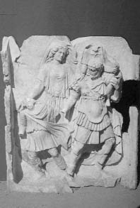

"Latin ozan Vergilius; birçok tarihçiye ve sanatçıya konu ve esin kaynağı olan Aeneis adlı destanını bitiremedi. Bu destan, Troya yakılıp yıkıldıktan sonra, Troyalı Ayneyas'ın yeni bir krallık kurmak üzere giriştiği İtalya yolculuğunu anlatıyordu. Böylece Vergilius, Roma İmparatorluğu'nun geçmişini Troya'ya dayandırmakla, Batı uygarlığının, Akdeniz uygarlıklarından kaynaklandığını çok belirgin olarak ortaya koymuş oluyordu..."
Troya kralı Priyamos, Ayneyas'ın amcası olurdu, çoban Anhises (Ankhises) de babası... Ayneyas'ın çocukluğu, kral Priyamos'un ünlü oğulları Hektor ve güzel Helena'yı Yunanistan'dan kaçırıp getiren Paris'le birlikte geçti...
Ayneyas'ın babası Anhises, eskilerin İda Dağı dedikleri Edremit yakınlarındaki binbir pınarlı Kazdağları'nda çobanlık ediyordu. Sürülerini otlatırken sık sık kavalını çalar, ezgiler söylerdi. Bunları duyan o güzelim ormanların geyikleri, ayıları, hatta bu dağların doruklarına konuşlanıp Troya'daki savaşları çıkarlarınca yönlendiren tanrılar bile ona kulak kesilirlerdi...

Ayneyas, babası ve çocuğuyla Kazdağları'ndan ayrılırken
Kazdağları'nın eteklerinde koyunlarını, sığırlarını otlatırken onun kavalıyla yaktığı bu ezgileri dinleyen güzellik tanrıçası Afrodit de onu büyük bir tutkuyla sevmeye başladı. Bir tanrıçanın ölümlü birini sevip onunla aşk yaşaması sık görülen bir şey değildi. O yüzden çoban Anhises'e olan tutkusunun başına vurduğu bir gün tanrıça Afrodit, bütün kadınsı hünerlerini kullandı onunla birlikte olabilmek için... Tanrılar Ülkesi Olimpos'tan inip Kıbrıs'taki tapınağına gitti apar topar. Orada letafet tanrıçaları Harites'ler (Kharites'ler), onu bir çoban kızı gibi bir güzel giydirip kuşattılar... Artık bir bayram günündeymiş gibi süslenip püslenen aşk ve güzellik tanrıçası Afrodit, doğruca çoban sevgilisi Anhises'in yaşadığı Kazdağları'na gitti. Onu çok iyi tanıyan ve seven kurtlar, ayılar, geyikler de hemen bir çeşit "hoş geldin alayı" oluşturdular; hemen ardına takıldılar! Afrodit çok sevdiği binbir pınarlı Kazdağları'ndaki bütün bu canlıların üstüne aşk kıvılcımları saçtı... Onlar da hemcinsleriyle eşleşmek üzere hemen dağılıp ağaçlar arasında gözden kayboldular... Sonra da Afrodit, bütün alımlılığıyla salına salına çoban Anhises'in eğreti kulübesine girdi. Buncasına güzel bir kızı aniden karşısında gören Anhises de çok şaşırdı. Gözlerini ovalaya ovalaya kendine geldikten sonra, böylesi bir güzelliğin ancak tanrıçalarda olabileceğini söyledi konuğuna. Köylü bir genç kız kılığındaki tanrıça Afrodit de onun bu sözlerini yalanlamaya çalıştı: "Ben sıradan bir kızım," dedi. "Troyaca dilini bilmemin nedeni, sütannemin Troyalı olması yüzünden... Bir gün genç kızlar korosunda şarkı söylerken tanrı Hermes beni büyüleyip bu dağa bıraktı ve bu dağda Anhises adlı bir çobanla evlenmemi istedi. Eğer o sensen, beni karın olarak al; sana güzel çocuklar doğurayım!.."
Bu sözlerden sonra Anhises'le birlikte geçirdikleri gecenin sabahında Afrodit, sevgilisine; "Ben tanrıça Afrodit'im," diye gerçeği açıklamaya başladı. "Ama korkma; benden doğacak erkek çocuğun bakımını beş yaşına dek Kazdağları'ndaki perikızları üstlenecek. Ve o çocuk ileride büyük bir halkın, Romalıların atası olacak! Ama sakın bu birlikteliğimizi başkalarına söyleme! Yoksa tanrıça Hera hem çocuğumuzun, hem de senin başına binbir kötülük yağdırır!.."
Bir süre sonra Anhises, şaraplı bir sohbet sofrasında dostlarıyla yarenlik ederken dilini tutamadı; tanrıça Afrodit'le Kazdağları'ndaki çoban kulübesinde güzel bir gece geçirdiğini ağzından kaçırıverdi!.. Bu açıklamayı anında duyan Afrodit de küplere bindi öfkesinden: Hıncını almak için onu anında hem kör etti, hem topal!
Bununla birlikte Afrodit; bu ölümlü çobandan doğurduğu oğlu Ayneyas'ı her zaman, özellikle Troya savaşları sırasında hep esirgeyip korudu... Bir keresinde Ayneyas, Yunanistanlı yağmacı orduların en ünlü savaşçılarıyla çarpışırken çok ağır yaralandı. Bunun üzerine Afrodit, tanrı Apollon'un yardımıyla onu apar topar savaş meydanından uzaklaştırdı! Hatta bu çatışma sırasında yaralanan kendi elinden bile tanrısal kanlar aktı!.. Apollon ve diğer tanrılar Ayneyas'ın bir an önce iyileşmesi için elbirliği ettiler. Çünkü onun ölmemesi gerekiyordu... Tanrı Poseydon da zaten cümle aleme açıkladı bunu:
Yazgısı kurtulmaktır Ayneyas'ın.
Tohum ekmeden, iz bırakmadan ölmeyecek o!
Güçlü Ayneyas kral olacak Romalılara,
Kral olacak çocuklarının çocukları!..
On yıl süresince Yunanistan'dan gelen yağmacı ve işgalci ordulara geçit vermeyen Troya surları; içi asker dolu hileli Tahta At'ın bir tanrı armağanı olduğu gerekçesiyle kente alınmasıyla düştü... İşte Troya yağmalanıp yakıldığı bu sıralarda tanrılar; babasını da yanına alıp İtalya'ya doğru yelken açması ve orada yakılıp yıkılan Troya'nın eşi olacak yeni bir krallık kurmasını buyurdular Ayneyas'a. Bu yüzden Ayneyas, daha yeni yeni ellenip ayaklanan oğlunun elinden tuttuğu ve babası kör ve sakat Anhises'i de sırtına aldığı gibi, doğruca Kazdağları'na sığındı. Tanrıça Atena'nın bir zamanlar gökyüzünden Troya'ya düşen Palladyon adlı tahtadan heykelini de yanına almayı unutmadı! Yunanistanlı kral Odisseus'un savaş sonrası ülkesine dönüşü sırasında gemisiyle izlediği aynı yolu izleyip Sicilya'ya yaklaştı. Tam sahile çıkacakken babası sakat Anhises yorgunluktan öldü... Bu arada kopan korkunç bir fırtına, gemisiyle birlikte onu Kartaca kıyılarına sürükleyip götürdü! Kartaca kraliçesi güzel Alissa da, kumsalda baygın yatarken gördüğü bu yabancıyı büyük bir konukseverlikle konağına alıp götürdü... Yaralarını iyileştirdi. Giydirdi kuşattı. Ayneyas da Troya'da olup bitenleri, bu yolculuk sırasında başından geçenleri bir bir anlattı güzel Alissa'ya...